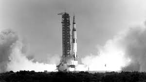

The most beautiful and complex thing we know that has been created in the universe is (human) life. For more beauty and complexity to arise it is necessary that human life survives. There are many possible threats to human life, such as nuclear wars or climate change and if humans are able to survive the next 5.5 billion years the sun will vaporize the Earth, making human life on Earth impossible. So, in order to increase the chances of human survival in the coming 5.5 billion years, it is necessary for human life to be on multiple planets. After that, we have to explore other solar systems with habitable conditions for humans. The only way we can do this, with our current understanding of physics, is by moving through space in spacecrafts. Well, there are also papers suggesting we could use free-floating planets as main transportation (Migrating extraterrestrial civilizations and interstellar colonization: implications for SETI and SETA), however, I think that humans should not limit ourselves to visiting places we can go via available free-floating planets, and then you need spacecrafts.
On this website, spacecrafts will be viewed from a big history perspective, connections are made between Spacecrafts and: the development of life, the development of Earth, the development and current state of the Anthropocene era.
The results found can be summarized as follows. The developments of spacecrafts show great similarities with the development of early complex life. Early complex life likely originated when higher oxygen levels allowed for the rise of predators. Because of this danger, organisms with better protection were able to survive. Spacecrafts were first made and rapidly advanced during the Cold War, a period full of danger. However, the Cold War was probably not long enough for humans to develop spacecrafts that would be able to go to Venus or Mars so if there would not have been a Moon our spacecrafts would likely be less sophisticated. By going to the Moon we have learned a lot about its origin and with that, we learned about the development of the Earth, all hypotheses are based on findings from Lunar rocks brought back by the Apollo missions. However, the launches and development of spacecrafts from these and other missions caused a lot of pollution. This is similar to the developments made during the Industrial Revolution, which initiated the Anthropocene era. Spacecrafts can be seen as a result of the developments made during the Industrial Revolution and allow us to monitor the climate and fight climate change more effectively.
Viewing spacecrafts from a big history perspective has given me more insights into all the topics I listed above and let me see that spacecrafts are a key to understanding our solar system and climate. Also, I saw how special spacecrafts and complex life are since both developed very quickly in a very short period of time. Rather than focussing on only spacecrafts or only a single historical topic, the big history perspective has allowed me to see the bigger picture of the relation between history and spacecrafts.